A model that can see a series and answer about it.
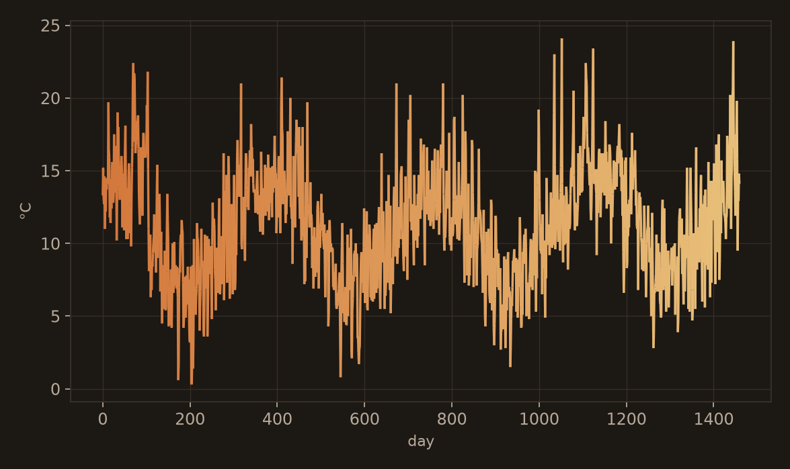
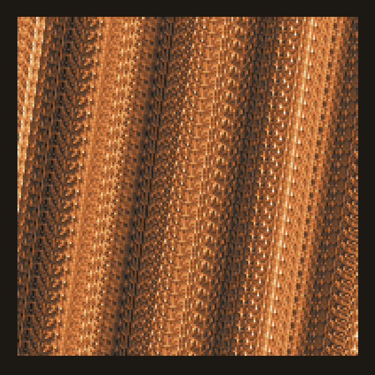
Problem
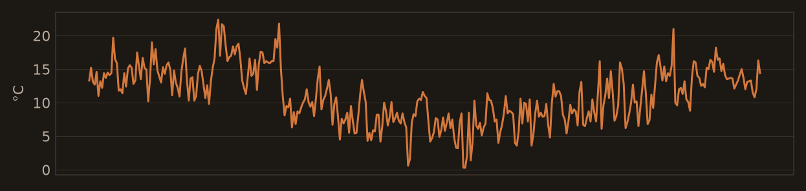
Describe
Trend, seasonality, a spike, a regime change.
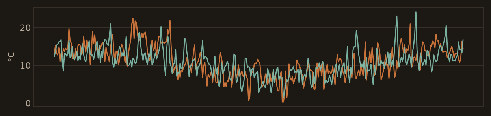
Compare
Same shape, different amplitude? Same event, twice?
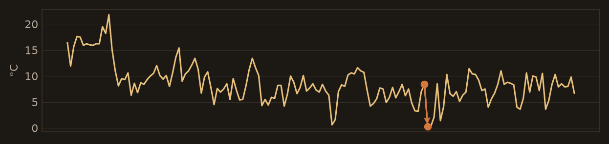
Explain
Cause, order of events, what the pattern implies.
Problem
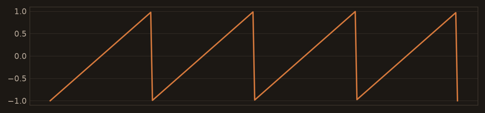
TSExam · MCQ
What is the primary cyclic pattern observed in the time series?
A SquareWave · B SineWave · C SawtoothWave · D No Wave
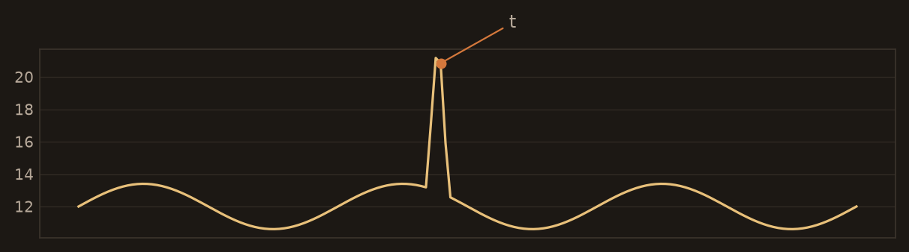
ChatTS · open QA
How large is the spike at timestamp t?
Trend, seasonality, local features — values have to be right.
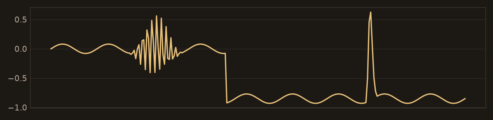
TSRBench · temporal relation
The series contains a sharp spike, a drop to a new baseline, and a high-frequency burst. What is their chronological order?
Related work
Different interfaces into an LLM. Each throws something away.
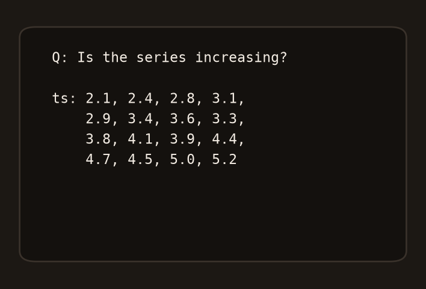
1 · Text
Dump numbers + context into a language model. Time-MQA.
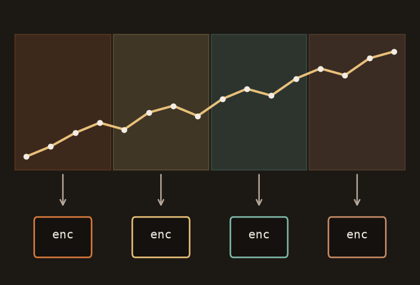
2 · Native TS
Patch-MLP or SoftPrompt into the LLM. ChatTS, OpenTSLM. One encoder.
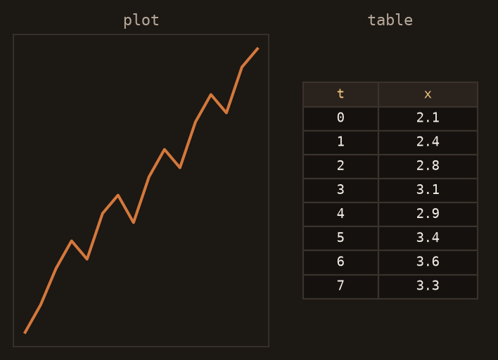
3 · Chart VLM
One VLM on rendered views. Includes LLaTiSA (plot + numeric table).
This work: two geometries, two ViTs, one reasoner.
Related · text
Time-MQA: question answering over numbers plus text context. The series never becomes a visual object.
Language is the right output interface. Raw values as the input tokens are expensive, weak on shape, and die on context length.
I keep the LLM head. I do not serialize the waveform as the vision.
Related · native TS · chart VLMs
ChatTS (patch-MLP) and OpenTSLM (SoftPrompt / Flamingo) put a native series encoder into the LLM. Still one geometry.
If the room says “two visual views already exist”: LLaTiSA is plot + numeric table into one Qwen3-VL. Same VLM, two images of different kinds. They eval HiTSR, not TSExam / ChatTS / TSRBench.
This work: chart ViT + delay DINOv3 — two geometries, not plot+table.
This work
The rest of the talk is this spine. Not a paper tour.
1 · Data
Synthetic captions, added patterns — not “I downloaded three datasets.”
2 · Arch
Chart + delay into one LLM. N series → N dual views.
3 · Train
See, then reason, then (in progress) prefer.
4 · Results
SOTA or on par on the triple. Proprietary still wins TSRBench.
Contribution 1 · data
TSExam, ChatTS, CaTS — starting point, not the contribution.
TSExam
Held-out HF protocol. Fast internal gate.
ChatTS
Official categorical / numerical metrics.
CaTS
Expert-audited domains for perception.
Contribution 1 · data
Instruction-only never taught the model to see. Captions and new pattern families did.
Contribution 2 · architecture
Not two models. Not a bigger ViT on one plot.
Input
Time seriesUnivariate or N named seriesChart
Line plotNative Qwen ViT · frozenDelay
Embedding imageDINOv3 + mergerProjectors
Fuse in token spaceM-RoPE · dual collatorReasoner
One LLMLoRA when the stage says soContribution 2 · architecture
Complementary categories. They will hear high vs low frequency without a FAQ slide.
Delay alone
Scale-invariant on purpose. ~0.17–0.35 vs ~0.71 with the chart.
Chart alone
Wins noise and pattern. Weaker on anomaly and causality.
Native ViT ≠ delay
qwendelay 0.601 vs DINO 0.831. Second geometry needs a second tower.
Dual 8B beats every 32B single-tower we ran on TSExam-full. Not “a unique snowflake in the literature” — a measured pair of inductive biases.
Contribution 2 · architecture
Towers, collator, merge, DDP. Multivariate is a contract, not a reshape.
N series = N markers = N dual views. Each named channel gets its own chart and its own delay.
Student ChatTS stored [C, T] and split per channel. TSExam used ts / ts1 / ts2. Mixing them and .ravel() concatenated channels in time — one fake univariate. Delay geometry was garbage.
I caught it in the collator. Not by training a bigger model.
Contribution 3 · training
Three stages. Not “we followed LLaVA.”
A
PerceptionWhat a series is · components · LLM frozenB
ReasoningQA + traces · LLM LoRAC
PreferenceIn progress · upweight good answersAlign, then teach the language model to answer. Same shape as LLaVA; the document is a time series, and stage C is not a finished RL paper.
Contribution 3 · Stage A
Train vision and alignment. Freeze the LLM. Teach components, not answers yet.
Instruction-only: 50+ configs, TSExam stuck at ~61.8%. The model could talk. It could not see.
Captions from gold features, then CaTS, unlocked Stage B. Decouple how to see from how to answer.
Contribution 3 · Stage B
Merge A. LoRA the language model. Teach it how to answer about a series.
Mix: exam MCQ, ChatTS QA, numeric questions, caption holdout, temporal-relation families.
Traces are part of the recipe — how to get to the letter, not only the letter. This is the stage that owns the three-bench numbers.
Contribution 3 · Stage C
Upweight good responses. Downweight bad ones. Not the SOTA story.
Idea: after SFT, prefer answers that are actually right — including gold reasoning traces, not format theater.
Status: working recipe on 9B (gold traces, then RL). Early letter-only preference on a saturated model was a no-op. Don’t take this as “GRPO is how we got the three-bench result.”
Contribution 4 · results
First known open stack at or near SOTA on TSExam, ChatTS, and TSRBench together. LLaTiSA reports HiTSR — different board.
Contribution 4 · results
The north star is still where giant closed systems win. That is the headroom, not a dodge.
| System | Overall | |
|---|---|---|
| GPT-5 (text + vision) | 55.6% | Closed |
| This work · 8B dual | 45.6% | Open · official protocol |
| Qwen3-VL-32B (paper) | 44.9% | Open chart VLM |
| TimeOmni-1-7B | 36.7% | Do not quote 49.4 — that is EP |
| ChatTS-14B | 33.5% | Native TS-MLLM |
Contribution 4 · rigor
I killed a mix that helped the average and hurt the hard reasoning slice.
What looked fine
Temporal-relation buckets in the mix. Average didn’t complain.
What I watched
TR ~5 pp vs control. Missing primitives, not “need more buckets.”
Stopped stacking. Audited operators. Rebuilt generators. Extra epochs still climb TSExam while TSRBench saturates — reasoning group stuck until the data contract is right.
Contribution 4 · scale
Don’t mix unlabeled campaigns. Bigger is not automatically better on the north star.
0.8B
Fast pilots. Not the external hook.
8B dual
Headline ceiling. Quote this.
27B dual
Wins the language-heavy board. Not TSRBench.
9B
vLLM port. Don’t lead with it as better.
Transfer · 6 months
Then scale. Not a giant pretrain on day one.
Transfer
Ablate the camera on that same frozen suite. Ship the cheaper model until it pays.
Series only
Dual tower on the signal. No camera until a slice moves.
Series + image
Time alignment required. Fusion without a shared clock leaks.
Transfer
Not a paper count. A parity gate: the served model is the trained model.
I ported the 9B dual stack to vLLM. 100 / 100 greedy answer parity vs Hugging Face on a local TSExam gate.
That is the transfer test I already ran on my stack. Same bar on their sensors: freeze eval, serve what you trained, watch the slice.
Close
Backup · numbers
| Model | TSExam HF | TSRBench | ChatTS |
|---|---|---|---|
| 8B dual Stage B | 0.926 | 0.4565 | num matches 14B paper |
| 9B dual Stage B | 0.883 | ~0.41–0.43 | ~0.91 / 0.87 |
| 9B + C-RS | 0.9316 | inline 40.7 | — |
| 27B dual OFF | 0.921 | re-run @2048 | cat 0.92 / 0.90 |
| 0.8B | 0.890 | 0.405 | — |
Caption attr-recovery 0.72 · numeric medAE 0.14 · ICL-UCR micro 0.688 (trades off TSRBench). 122B FT letter-A — infra only, not a result.
Backup · backbone
Shared trunk is the foundation-model bet. Not the same tokenizer for every rate.
Language still has BPE. Vision still has patches. Unification lives at the token layer, not one patch size for audio and CAN.
Bake off vs two specialists on a frozen task. Don’t recant into a zoo. Don’t religiously insist on one giant net.
Backup · clocks
Sensors must share a clock or fusion leaks. Naive concat makes the slow channel sparse and the fast channel explode.
Same lesson as two geometries: don’t destroy the inductive bias to make the batch look rectangular.
Fuse on a coarser grid, or keep multi-rate tokens. Don’t interpolate telemetry onto the audio clock.
Backup · two tools
Don’t pick an ideology.
LDDBM: modality translation in a shared latent (BCAI Haifa collab — research; I don’t claim it shipped in a BU).
VLM: language + image context, questions about a series. Event detect may want a native encoder. Choose by the frozen suite, not by papers.
Backup · irregular
Sensors drop. Fusion without a shared clock is leakage.
Completion + masking lineage (~70% discriminative, ~85% compute) — only if they go industrial telemetry.
One slide, not a paper recap. Sep 7 can promote this.
Backup · Stage C
Gold traces, then RL. Letter-GRPO on saturated MCQ was a no-op.
Don’t say “GRPO is how we got SOTA.”
Backup · eval
A right letter in a wrong wrapper is a reliability bug. Promote this if the talk runs fast.
Schema / format failures tracked separately from TSExam / TSRBench scores.
Two eval bugs caught on thinking models: thinking never engaged; wrong EOS → runaway. Thinking-ON zero-shot destroys TSRBench (9B 0.166 vs 0.417 OFF). Don’t claim CoT as a free win.
Backup · multivariate
Spoken path already has the ravel bug. This is the fallback they may ask about.
Dual collator
Named series, one marker each. Matches how the model was trained.
Mismatch fallback
Older ChatTS eval path if marker counts disagree. TSRBench text often assumes one combined image — this model is per-series.
[C,T] under a TSExam ts key.